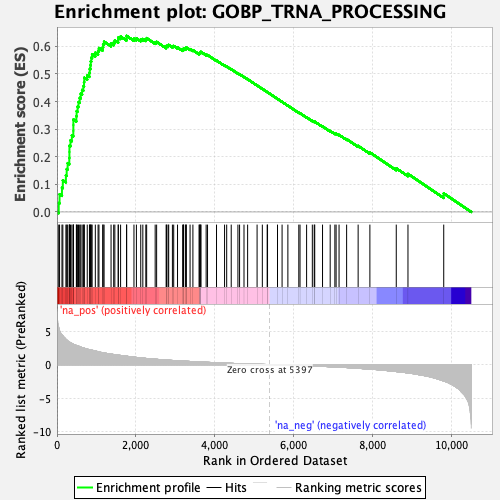
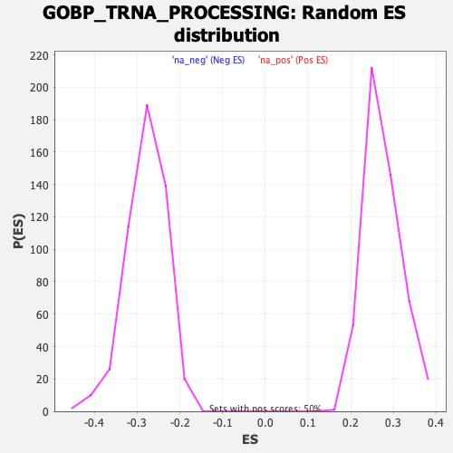

| Dataset | qlf.KOd4vsWTd4_gsea_score |
| Phenotype | NoPhenotypeAvailable |
| Upregulated in class | na_pos |
| GeneSet | GOBP_TRNA_PROCESSING |
| Enrichment Score (ES) | 0.6378625 |
| Normalized Enrichment Score (NES) | 2.3226783 |
| Nominal p-value | 0.0 |
| FDR q-value | 0.0 |
| FWER p-Value | 0.0 |

| SYMBOL | RANK IN GENE LIST | RANK METRIC SCORE | RUNNING ES | CORE ENRICHMENT | |
|---|---|---|---|---|---|
| 1 | PUS1 | 44 | 5.471 | 0.0324 | Yes |
| 2 | METTL1 | 65 | 5.025 | 0.0641 | Yes |
| 3 | PUS7 | 126 | 4.428 | 0.0880 | Yes |
| 4 | TRMT61A | 148 | 4.282 | 0.1146 | Yes |
| 5 | NSUN2 | 226 | 3.772 | 0.1325 | Yes |
| 6 | WDR4 | 246 | 3.672 | 0.1553 | Yes |
| 7 | RPP14 | 270 | 3.533 | 0.1767 | Yes |
| 8 | THUMPD1 | 312 | 3.367 | 0.1953 | Yes |
| 9 | POP1 | 315 | 3.354 | 0.2176 | Yes |
| 10 | TRMT6 | 316 | 3.352 | 0.2400 | Yes |
| 11 | PUSL1 | 342 | 3.275 | 0.2595 | Yes |
| 12 | TRMT5 | 377 | 3.157 | 0.2774 | Yes |
| 13 | DUS1L | 414 | 3.033 | 0.2942 | Yes |
| 14 | ELP3 | 415 | 3.032 | 0.3145 | Yes |
| 15 | RPP30 | 416 | 3.028 | 0.3348 | Yes |
| 16 | RPP38 | 491 | 2.850 | 0.3468 | Yes |
| 17 | ELAC2 | 498 | 2.841 | 0.3652 | Yes |
| 18 | DPH3 | 523 | 2.801 | 0.3817 | Yes |
| 19 | TRMT11 | 545 | 2.766 | 0.3982 | Yes |
| 20 | TSEN2 | 576 | 2.674 | 0.4132 | Yes |
| 21 | TRMT1 | 602 | 2.620 | 0.4283 | Yes |
| 22 | NAT10 | 637 | 2.531 | 0.4420 | Yes |
| 23 | ELP5 | 669 | 2.476 | 0.4556 | Yes |
| 24 | TRMT10A | 686 | 2.444 | 0.4704 | Yes |
| 25 | RPPH1 | 692 | 2.440 | 0.4863 | Yes |
| 26 | POLR3K | 767 | 2.299 | 0.4946 | Yes |
| 27 | DUS4L | 823 | 2.227 | 0.5042 | Yes |
| 28 | RTCB | 831 | 2.219 | 0.5184 | Yes |
| 29 | QTRT1 | 848 | 2.198 | 0.5315 | Yes |
| 30 | SSB | 856 | 2.190 | 0.5455 | Yes |
| 31 | DDX1 | 870 | 2.169 | 0.5588 | Yes |
| 32 | TRMT10C | 891 | 2.133 | 0.5712 | Yes |
| 33 | DTWD2 | 972 | 2.024 | 0.5770 | Yes |
| 34 | RPP25L | 1042 | 1.925 | 0.5833 | Yes |
| 35 | THG1L | 1064 | 1.878 | 0.5938 | Yes |
| 36 | CTU2 | 1159 | 1.770 | 0.5967 | Yes |
| 37 | TYW3 | 1170 | 1.755 | 0.6074 | Yes |
| 38 | POP5 | 1194 | 1.735 | 0.6168 | Yes |
| 39 | TRNT1 | 1371 | 1.564 | 0.6104 | Yes |
| 40 | ADAT1 | 1438 | 1.505 | 0.6141 | Yes |
| 41 | TSEN15 | 1467 | 1.485 | 0.6214 | Yes |
| 42 | TRUB1 | 1553 | 1.407 | 0.6226 | Yes |
| 43 | LAGE3 | 1555 | 1.407 | 0.6319 | Yes |
| 44 | DUS3L | 1613 | 1.365 | 0.6356 | Yes |
| 45 | LSM6 | 1765 | 1.254 | 0.6295 | Yes |
| 46 | GRSF1 | 1766 | 1.252 | 0.6379 | Yes |
| 47 | RPP40 | 1952 | 1.113 | 0.6275 | No |
| 48 | POP4 | 2014 | 1.070 | 0.6288 | No |
| 49 | OSGEPL1 | 2124 | 0.995 | 0.6250 | No |
| 50 | ALKBH8 | 2177 | 0.970 | 0.6265 | No |
| 51 | WDR6 | 2253 | 0.924 | 0.6255 | No |
| 52 | METTL8 | 2274 | 0.910 | 0.6297 | No |
| 53 | PUS10 | 2490 | 0.807 | 0.6144 | No |
| 54 | FTSJ1 | 2527 | 0.788 | 0.6162 | No |
| 55 | HSD17B10 | 2769 | 0.686 | 0.5976 | No |
| 56 | TRMT13 | 2776 | 0.683 | 0.6016 | No |
| 57 | MTO1 | 2816 | 0.664 | 0.6023 | No |
| 58 | TRMT44 | 2833 | 0.657 | 0.6052 | No |
| 59 | THUMPD3 | 2927 | 0.619 | 0.6004 | No |
| 60 | ADAT2 | 2960 | 0.609 | 0.6014 | No |
| 61 | MTFMT | 3057 | 0.577 | 0.5960 | No |
| 62 | ELP4 | 3187 | 0.529 | 0.5871 | No |
| 63 | METTL6 | 3208 | 0.521 | 0.5887 | No |
| 64 | TRMT112 | 3210 | 0.521 | 0.5921 | No |
| 65 | TSEN54 | 3256 | 0.509 | 0.5912 | No |
| 66 | PUS3 | 3276 | 0.498 | 0.5927 | No |
| 67 | CDKAL1 | 3277 | 0.498 | 0.5960 | No |
| 68 | TYW1 | 3375 | 0.468 | 0.5898 | No |
| 69 | TYW5 | 3447 | 0.446 | 0.5860 | No |
| 70 | LCMT2 | 3603 | 0.398 | 0.5738 | No |
| 71 | TRMT1L | 3619 | 0.392 | 0.5749 | No |
| 72 | ALKBH1 | 3628 | 0.388 | 0.5768 | No |
| 73 | TPRKB | 3647 | 0.384 | 0.5776 | No |
| 74 | TRMT10B | 3648 | 0.384 | 0.5802 | No |
| 75 | TRMU | 3783 | 0.346 | 0.5696 | No |
| 76 | KTI12 | 3818 | 0.338 | 0.5686 | No |
| 77 | POP7 | 4046 | 0.277 | 0.5486 | No |
| 78 | DTWD1 | 4250 | 0.226 | 0.5306 | No |
| 79 | CTU1 | 4304 | 0.217 | 0.5270 | No |
| 80 | TRMT61B | 4419 | 0.187 | 0.5173 | No |
| 81 | OSGEP | 4589 | 0.146 | 0.5020 | No |
| 82 | RPUSD4 | 4631 | 0.139 | 0.4990 | No |
| 83 | TRMT2B | 4743 | 0.115 | 0.4891 | No |
| 84 | TSEN34 | 4835 | 0.100 | 0.4810 | No |
| 85 | AARS2 | 5075 | 0.056 | 0.4584 | No |
| 86 | TRPT1 | 5208 | 0.033 | 0.4459 | No |
| 87 | TRIT1 | 5331 | 0.014 | 0.4343 | No |
| 88 | TRMT12 | 5340 | 0.012 | 0.4336 | No |
| 89 | FARS2 | 5593 | -0.031 | 0.4096 | No |
| 90 | ZBTB8OS | 5709 | -0.048 | 0.3989 | No |
| 91 | NSUN6 | 5856 | -0.072 | 0.3853 | No |
| 92 | CLP1 | 6133 | -0.121 | 0.3596 | No |
| 93 | MOCS3 | 6164 | -0.126 | 0.3575 | No |
| 94 | ELAC1 | 6331 | -0.161 | 0.3427 | No |
| 95 | DUS2 | 6476 | -0.195 | 0.3301 | No |
| 96 | CDK5RAP1 | 6524 | -0.205 | 0.3270 | No |
| 97 | RPP21 | 6537 | -0.208 | 0.3272 | No |
| 98 | GTPBP3 | 6735 | -0.258 | 0.3100 | No |
| 99 | BCDIN3D | 6929 | -0.309 | 0.2935 | No |
| 100 | DALRD3 | 7048 | -0.341 | 0.2844 | No |
| 101 | URM1 | 7079 | -0.350 | 0.2839 | No |
| 102 | ANKRD16 | 7154 | -0.373 | 0.2793 | No |
| 103 | NSUN3 | 7346 | -0.434 | 0.2638 | No |
| 104 | TRDMT1 | 7638 | -0.548 | 0.2395 | No |
| 105 | THADA | 7936 | -0.670 | 0.2155 | No |
| 106 | THUMPD2 | 8605 | -1.031 | 0.1581 | No |
| 107 | PTCD1 | 8902 | -1.233 | 0.1379 | No |
| 108 | ADAT3 | 9809 | -2.448 | 0.0672 | No |
